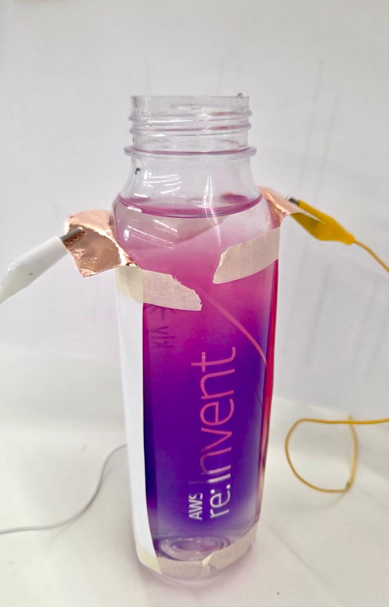
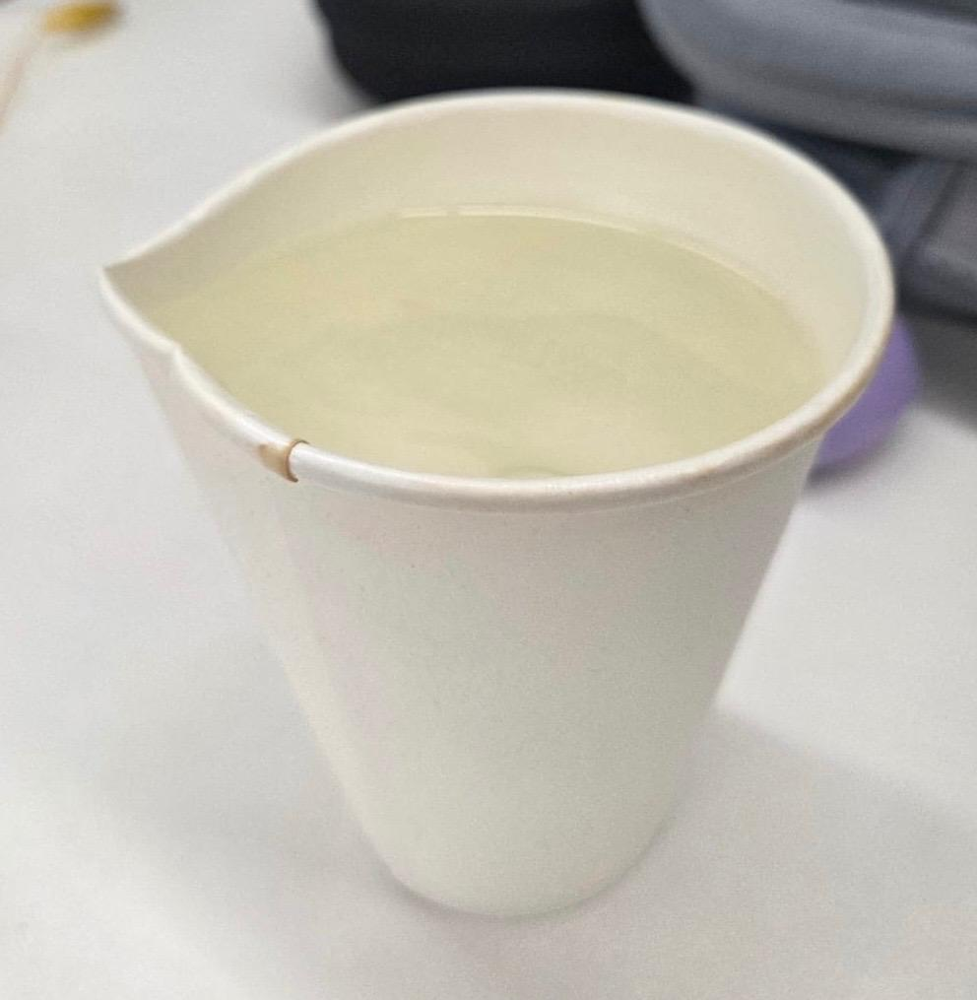
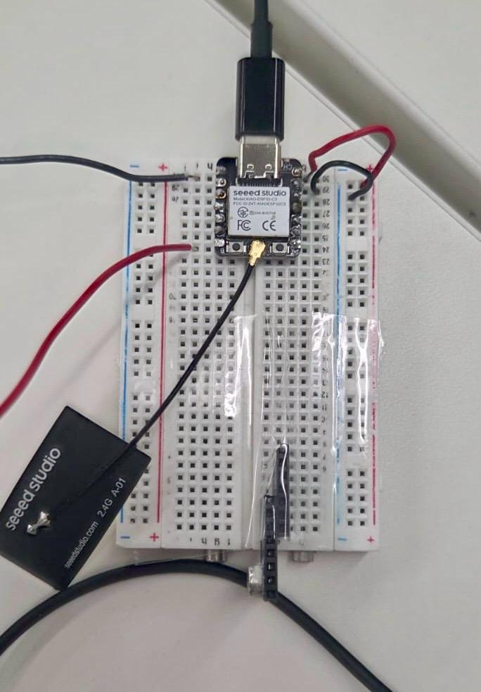
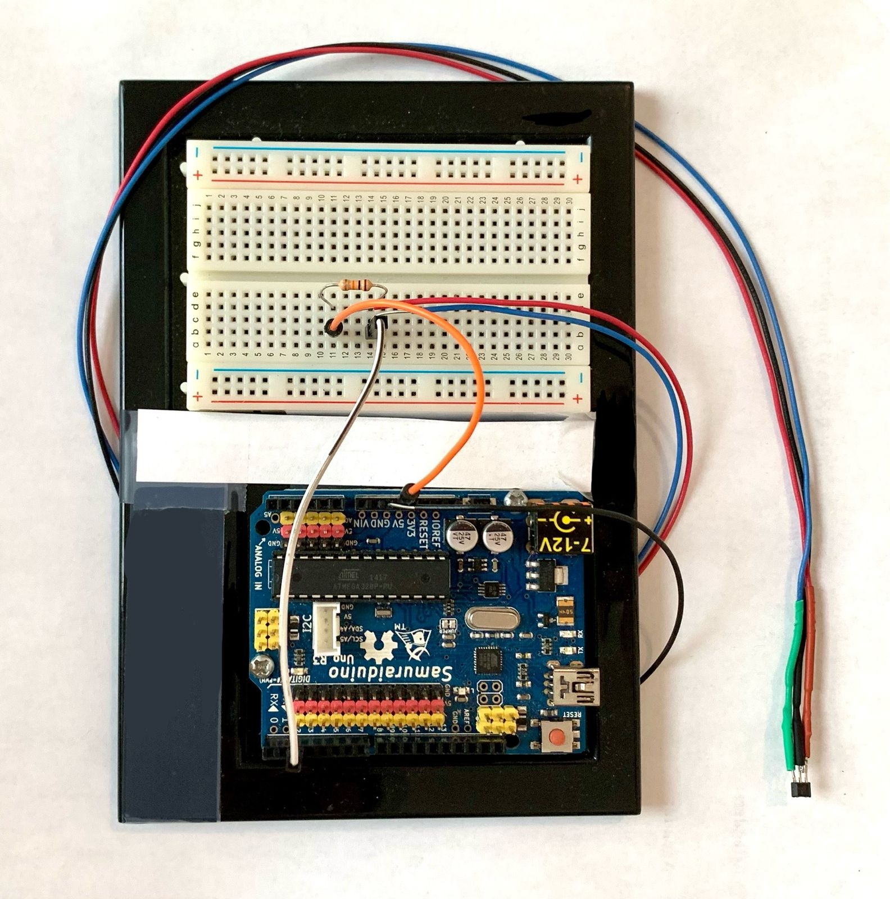
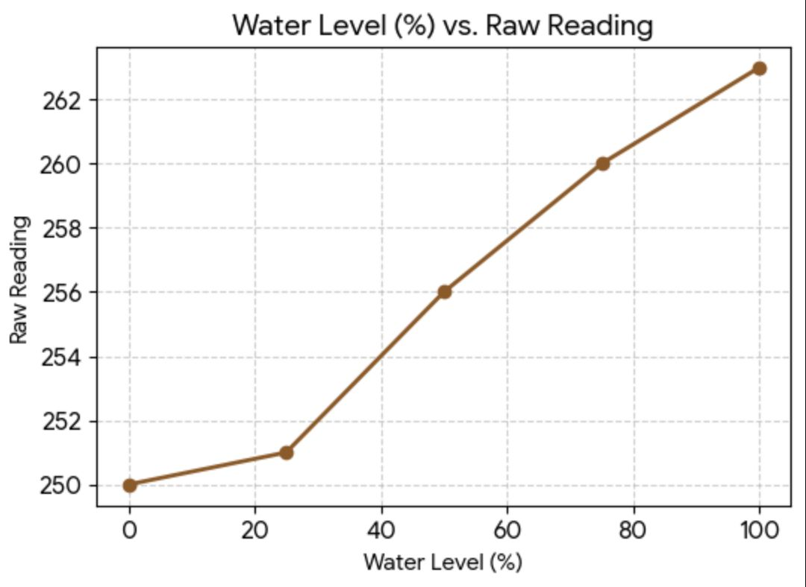
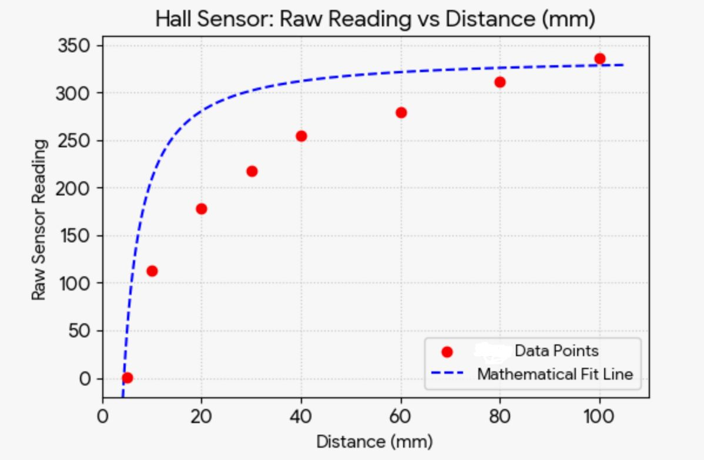

Two sensors this week: a self-fabricated capacitive sensor that measures water level through a plastic bottle, and a Hall effect sensor that detects magnetic field strength at varying distances. Both calibrated, graphed, and connected to an LED output.
Team: Chloe · Claudia · Matthew · Gurmani
A capacitive sensor measures water level by detecting changes in the dielectric properties of the material between two copper plate electrodes. As water level rises, the capacitance between the plates increases — detectable as a change in the time it takes to charge a capacitor through the sensor.
01
With 15 minutes to build a proof of concept, the team taped two copper tape electrodes on opposite sides of Claudia's water bottle — a capacitor with water as the dielectric. Alligator clips connected the copper plates to the microcontroller.

Copper tape electrodes taped to either side of the bottle
02
Initial readings were heavily influenced by hand proximity and external variables. To create a controlled environment, the team shaped a beaker from a Chloe's Clover café coffee cup, poured water in by percentage increments, and recorded readings at each level.

DIY beaker — coffee cup repurposed for controlled fill measurements
03

Capacitive sensor circuit — Seeed Studio XIAO ESP32-C3
| Fill level | Raw reading | Notes |
|---|---|---|
| 0% | 250 | Empty bottle |
| 25% | 251 | Quarter full |
| 50% | 256 | Half full |
| 75% | 260 | Three quarters |
| 100% | 263 | Full bottle |
Raw reading vs water fill level
The relationship is not linear — readings increase slowly at low fill levels and accelerate as the bottle fills, consistent with the non-linear relationship between water height and the dielectric effect on capacitance across the full bottle cross-section.
A Hall effect sensor detects magnetic fields by measuring the voltage across a conductor placed in a magnetic field — the Hall voltage. The analog SS49E outputs a resting voltage of ~2.5V (raw ~512) with no field present, shifting proportionally as a magnet approaches. Here it is used to detect proximity, with an LED that activates when the field is strong enough.
01

Hall sensor wired to Arduino Uno R3 — A0 for signal, Pin 8 for LED
| Sensor pin | Arduino | Purpose |
|---|---|---|
| Pin 1 — VCC | 5V | Power |
| Pin 2 — GND | GND | Ground |
| Pin 3 — OUT | A0 | Analog signal |
| LED + | Pin 8 via 220Ω | Output indicator |
| LED − | GND | Ground |
Hall sensor (SS49E) wired to Arduino Uno R3 — 3 connections total
| Sensor Pin | Arduino | Purpose |
|---|---|---|
| Pin 1 — VCC | 5V | Power |
| Pin 2 — GND | GND | Ground |
| Pin 3 — OUT | A0 | Analog signal |
First, I confirmed the sensor was responding correctly by reading the analog output on the Arduino Serial Monitor. The sensor produced a resting value near 336 raw (1.5V), shifting up or down as a fridge magnet approached it.
Serial Monitor resting at 336, shifted with magnet proximity

Collected readings at fixed distances from 10cm down to 0.5cm, moving the magnet 2cm or 1cm closer each time and averaging five readings at each position to reduce noise.
| Distance (cm) | Raw Reading |
|---|---|
| 10.0 | 336 |
| 8.0 | 311 |
| 6.0 | 279 |
| 4.0 | 255 |
| 3.0 | 218 |
| 2.0 | 178 |
| 1.0 | 113 |
| 0.5 | 1 |

Raw reading vs distance in mm — inverse square relationship visible
A Hall sensor embedded in the brace shell could detect a small magnet mounted on the McKibben actuator bladder — measuring how far the bladder has expanded indirectly, without needing a pressure sensor inside the airway. As the bladder inflates and the magnet moves closer to the shell, the Hall sensor reading increases — giving a non-invasive measure of inflation state.
→ See how this fits into EmbraceSelf-fabricated circuit board using CNC milling with a 3D printed enclosure.